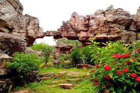

AMARAVATI STUPA

CITY : AMARAVATI
The Amaravati Stupa, popularly known as the great stupa at Amaravathi, is a Buddhist monument, probably built in phases between the third century BCE and about 250 CE, at Amaravathi village, Palnadu district, Andhra Pradesh, India. The site is under the protection of the Archaeological Survey of India. The campus includes the stupa itself and the Archaeological Museum.
CHANDRAGIRI FORT
CITY : TIRUPATI
Chandragiri is now famous for the historical fort, built in the 11th century, and the Raja Mahal (Palace) within it. The fort encircles eight ruined temples of Saivite and Vaishnavite pantheons, Raja Mahal, Rani Mahal and other ruined structures.The Raja Mahal Palace is now an archaeological museum. The fort and palace are in the care of the Archaeological Survey of India.
UNDAVALLI CAVES
CITY : VIJAYAWADA
Undavalli Caves are a monolithic example of Indian rock-cut architecture.Undavalli Caves, by their sheer beauty of design and construction, speak volumes of the inconceivably advanced architectural skills of the ancient Viswakarma sthapathis (temple architects and builders) leaving you in wonderment and pride about India’s advanced culture during the ancient and medieval times
GANDIKOTA FORT
CITY : KADAPA
The fort of Gandikota acquired its name due to the 'gorge', formed between the Erramala range of hills, also known as Gandikota hills and the river Penna (Pennar) that flows at its foot, reducing its width to a mere 100m.In the fort are two ancient temples, dedicated to Madhava and Ranganatha.A heritage festival is held every year in the fort area.
PENUKONDA FORT
CITY : ANANTAPUR
The Penukonda Fort is one of the main attractions of Anantapur.The fort derived its name from the word Penukonda, which literally means big hill. This historic fort was once the second capital of the Vijayanagar Empire.The 11-feet tall Penukonda Fort houses multiple mosques inside among with Sher Khan Mosque is the most important one.
BELUM CAVES
CITY : KURNOOL
Belum Caves have a length of 3,229m making them the second largest caves on the Indian Subcontinent. It is known for its speleothems, such as stalactite and stalagmite formations. The Belum Caves have long passages, galleries, spacious caverns with fresh water.This cave system was formed over the course of tens of thousands of years by flow of underground water from river Chitravathi.
SILATHORANAM

CITY : TIRUPATHI
Silathoranam (The Great Geological Arch) It is one among the places visited by most of the pilgrims who came to Tirumala.In the 1980s, during excavations for a geological fault in the Tirumala hills, geologists found this rare geological formation of the rock arch which has two dissimilar sets of rocks with a connecting thin link.
BOJJANA KONDA

CITY : VIZAG
Bojjannakonda, a centuries-old Buddhist heritage site in Andhra Pradesh, is set to become a major tourist attraction thanks to investments from government.Bojjannakonda and Lingalametta are ancient Buddhist monasteries from the 3rd century BC. The main stupa at Bojjannakonda is a rock-carved structure covered with bricks and adorned with Buddha sculptures.
BOBBILI FORT
CITY : VIJAYANAGARAM
The Bobbili Fort, located in the Vizianagaram district of the Indian state of Andhra Pradesh, was built during the middle of the 19th century in Bobbili.The founder of House of Bobbili, Pedda Rayudu, was the 15th descendant of the Rajas of Venkatagiri. The first floor houses a museum of various artifacts pertaining to the Bobbili of yore.
BORRA CAVES
CITY : VIZAG
The Borra Caves (Borrā Guhalu) are located in the Ananthagiri hills of the Araku Valley.The stalactites and stalagmites in the caves have various interesting shapes-there are formations resembling Shiva-Parvati, Mother and Child, the beard of a saint, a crocodile and even a stalagmite in the shape of a human brain. There is also a naturally formed Shivalinga deep inside the cave.
KONDAPALLI FORT

CITY : VIJAYAWADA
Kondapalli Fort is a marvellous 14th-century fort located in the village of Kondapalli in Guntur district near Vijayawada. The resplendent fort is considered of great historical importance and attracts tourists from all over the world.Kondapalli fort is also called as Kondapalli Kota and was built by the Musunuri Nayaks in the district.
KONDAVEEDU FORT
CITY : GUNTUR
Kondaveedu Fort is a historically significant ancient hill fortress located in Kondaveedu, a village in the Chilakaluripet constituency of Palnadu district, Andhra Pradesh, India. The site is located 16 miles west of the city of Guntur. Apart from this main fort, there are two other forts (names not known) nearby. Efforts are in progress to classify Kondaveedu Fort as a UNESCO World Heritage Site.
ADONI FORT
CITY : KURNOOL
Adoni Fort is a 15th century historic monument built during the reign of the Vijayanagara Dynasty. The fort served as a military base and its walls stretch over 50 kilometres in length making it the largest fort in the country. After the downfall of the Vijayanagara empire, the fort was possessed by the Bijapur Sultanate and later, after the defeat of Tipu Sultan, came under the British Reign.
NAGARJUNA KONDA
CITY : GUNTUR
Nagarjuna Konda is one of India's richest Buddhist sites, and now lies almost entirely under the lake created by the Nagarjuna Sagar Dam. With the construction of the dam, the archaeological relics at Nagarjunakonda were submerged, and had to be excavated and transferred to higher land, which has become an island.The site was once the location of a large Buddhist monastic university complex, attracting students from as far as China, Gandhara, Bengal and Sri Lanka.
GANDHI HILL
CITY : VIJAYAWADA
Gandhi Hill, the first of its kind in the country is one such tourist spot, attracting huge crowds every day.It is the first Gandhi memorial in India on a hillock, is a major tourist spot in Vijayawada.This Gandhi memorial with seven stupas was constructed to pay tribute to the Father of the Nation. The 52 ft tall Gandhi stupa is the major attraction here, unveiled by Dr. Zakir Hussain, the then President of India, on 6th October 1968.
KUMARA BHIMESHWARA SWAMY TEMPLE
CITY : KAKINADA
Kumararama or Bhimarama (Chalukya Kumararama Bhimeswara Temple) is one of the five Pancharama Kshetras that are sacred to the Hindu god Shiva. The temple is located in Samalkota of Kakinada district in the Indian state of Andhra Pradesh. It is one of the centrally protected monuments of national importance.
RAMACHANDRAPURAM FORT
CITY : RAMACHANDRAPURAM
Ramachandrapuram is a town in Dr. B.R. Ambedkar Konaseema district of the Indian state of Andhra Pradesh.The town is a Municipality which serves as the headquarters of Ramachandrapuram mandal and Ramachandrapuram revenue division.The Ramachandrapuram decades back called as “PENKULLAPADU” Raja Kakarlapudi Dynasty ruled this area. Before 17th century they ruled form Kotipalli Kota.
STATUE OF SOCIAL JUSTICE
CITY : VIJAYAWADA
The Statue of Social Justice,also known as the Dr. B. R. Ambedkar Smriti Vanam (English: Dr. B. R. Ambedkar Memorial), is a 125-ft tall statue located in Vijayawada in the Indian state of Andhra Pradesh. The memorial dedicated to B. R. Ambedkar, an Indian polymath, statesman, social reformer and the father of the Indian Constitution. This Ambedkar's statue is 125 feet (38 m) tall and stands on an 81 feet (25 m) tall base building, making its total height 206 feet (63 m).It is the fourth tallest statues in India.
KOTAPPAKONDA
CITY : GUNTUR
Kotappakonda is a holy hill, situated in Palnadu district, Andhra Pradesh, India. It is located 20 kilometers from Narasaraopet and Chilakaluripet city and 62 kilometers south west of Guntur City.Celebrated with great devotion and fervor every year with a large number of devotees thronging the place, Kotappakonda has an interesting history and some incredible facts associated with it.
VIJAYANAGARAM FORT
CITY : VIJAYANAGARAM
Vizianagaram fort is an early 18th-century fort in the city of Vizianagaram in northeastern Andhra Pradesh, South India. It was built by Vijaya Rama Raju, the Maharaja of Vizianagaram in 1713. The formal ceremony, while laying the foundation for the fort, was very auspicious as it represented five signs of victory. The square-shaped fort.
YAGANTI TEMPLE
CITY : NANDYAL
Yaganti Temple or Sri Yaganti Uma Maheswara Temple is a temple of Shiva in Nandyal district in the India state of Andhra Pradesh. It was built according to Vaishnavaite traditions.This temple was constructed by King Harihara Bukka Raya of the Sangama Dynasty of the Vijayanagara Empire in the 15th century.It was built according to Vaishnavaite traditions.